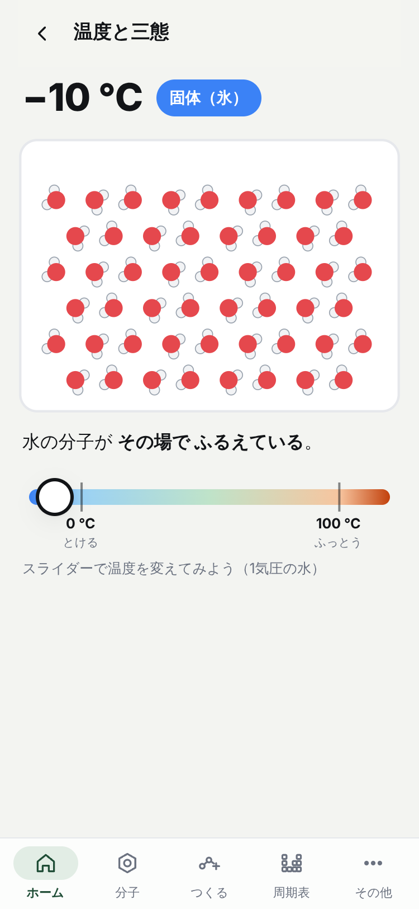
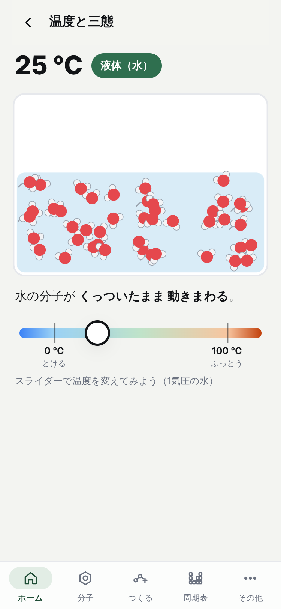
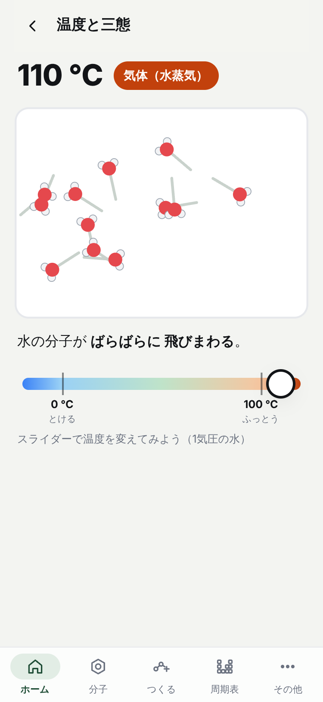
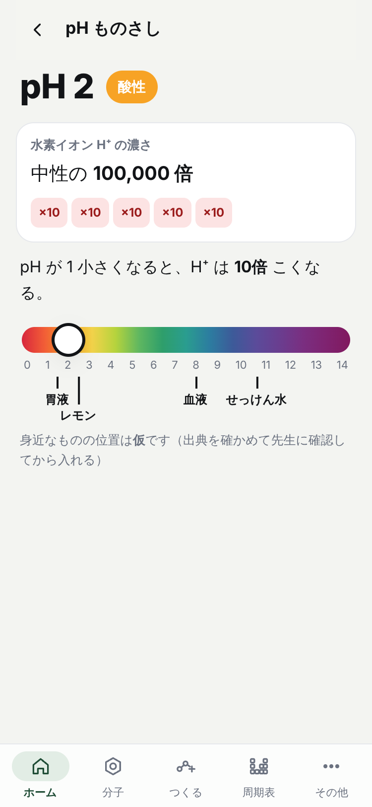
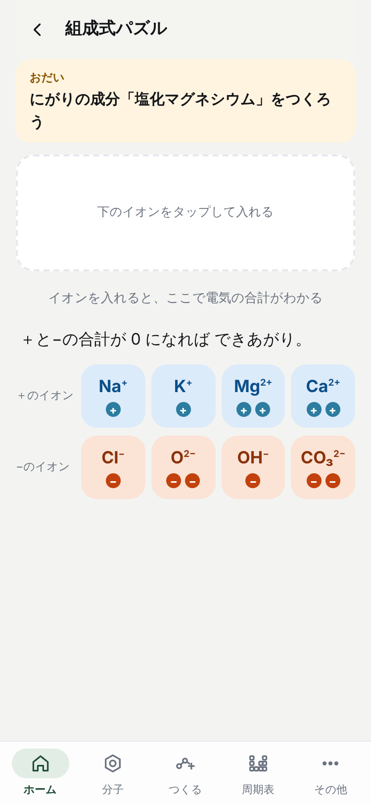
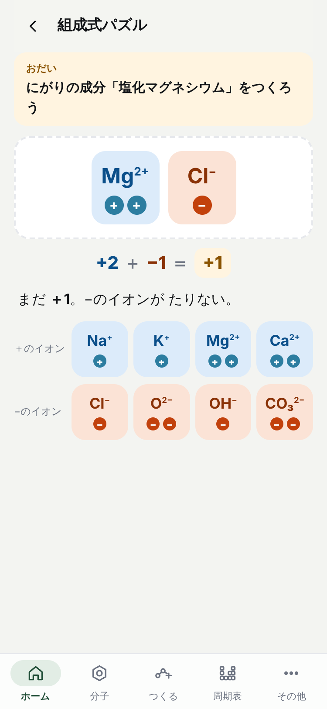
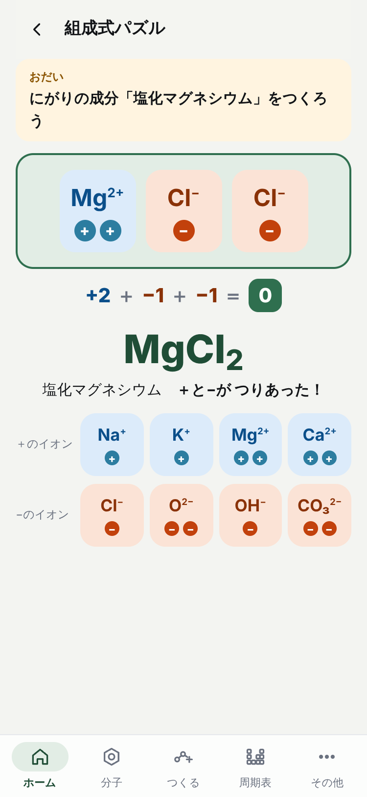
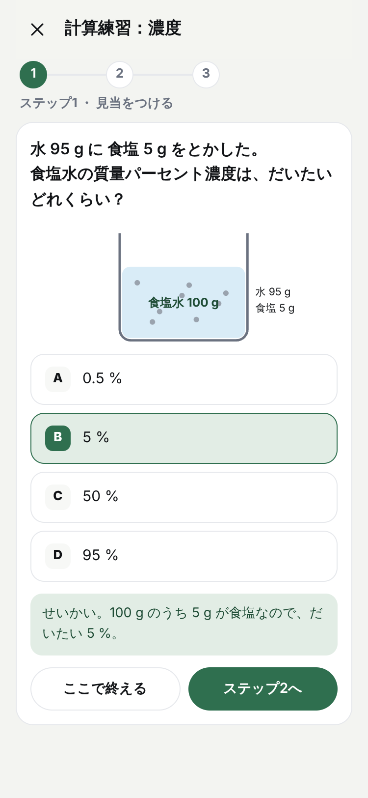
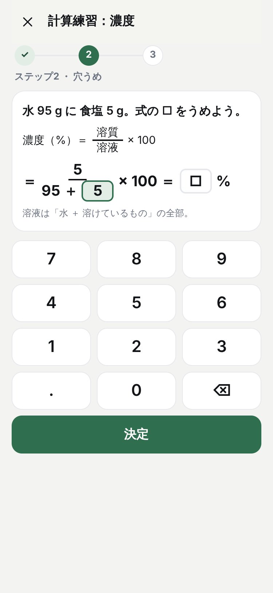
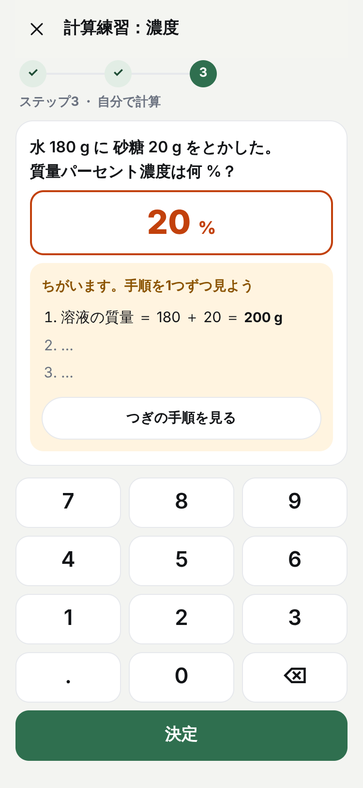

指でスライダーを動かすと、すぐに絵と言葉が変わる。文は2行まで。同じ型で、あとからモル・濃度の教材も作る。端末が「視差効果を減らす」設定なら、粒子は動かさず止まった絵にする。

固体：分子が並んで、その場でふるえる（実際は小さく揺れるアニメ）。

液体：くっついたまま動きまわる。

気体：ばらばらに飛びまわる。0 ℃・100 ℃（1気圧の水）の目盛り。

pH を動かすと、中性とくらべた H⁺ の濃さ（×10 のはしご）が変わる。胃液・レモン・血液・せっけん水の位置は仮。出典を確かめて先生に確認してから入れる。
イオンをタップして入れる（もう一度タップで出す）。＋と−の合計が 0 になると組成式と名前が出る。おだいなしの自由モードもある。同じ型で、あとから「なかまわけ」「反応式の天びん」を作る。

おだいは身近な物質（にがり・食塩・カルシウムのサプリなど）。

電気の合計がいつも見えている。「まだ＋1」と、たりないものを言葉で。

MgCl₂ と名前（塩化マグネシウム）。名前はイオンの名前から自動で作る。
① 図で見当をつける4択 → ② 式の穴うめ → ③ 自分で計算。①だけで終えてもよい。入力は画面のテンキーだけ（スマホのキーボードは出さない）。答えは有効数字2桁くらいの幅で正解にする。まちがえたら手順を1つずつ見せる。計算中は下のタブを隠す。


